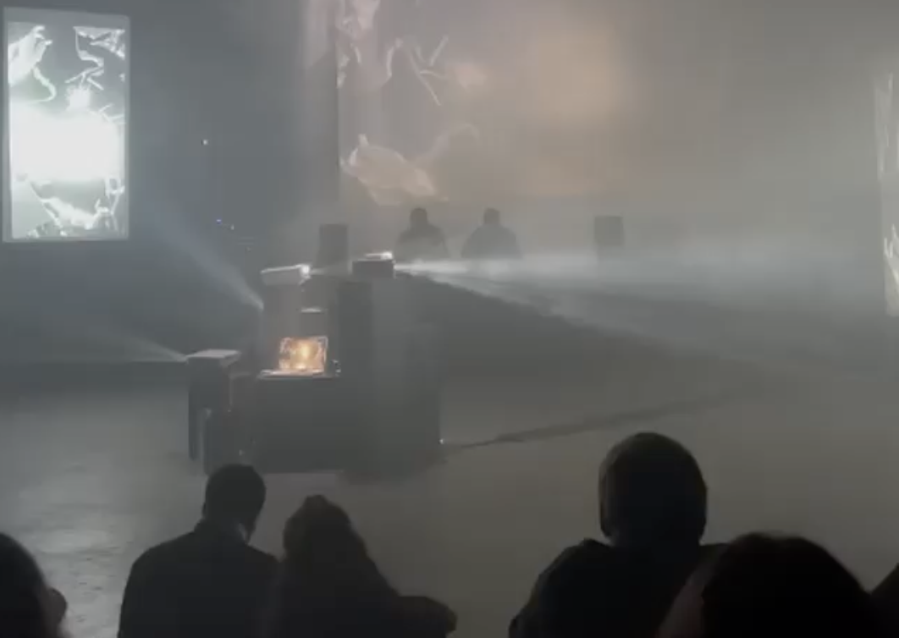
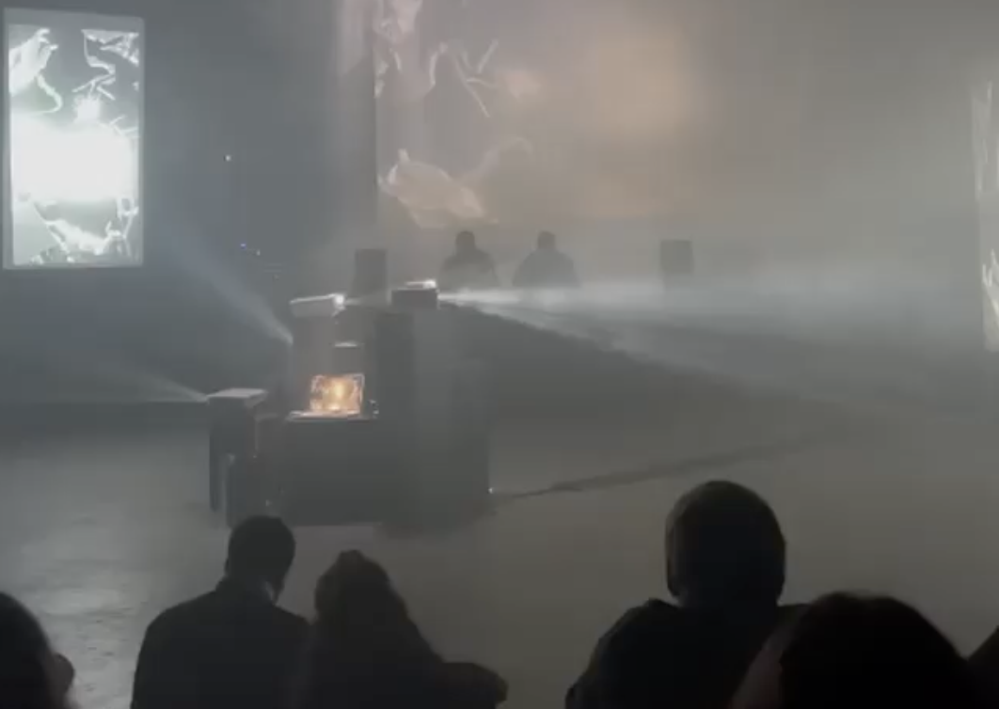

Orror
Musical duo Orror, (with Flavio Righetti) produces electronic music and performs live and DJ sets. Our work focuses on connecting different genres that, at first glance, might not seem compatible. In our music, we emphasize the diversity of rhythms. Inspired by classic funk patterns, analog and digital synthesizers, and the creative use and manipulation of samples, we craft soundscapes that are both surprising and danceable.
 
